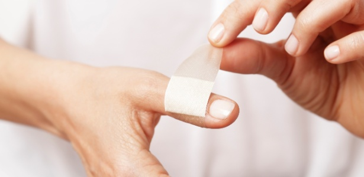

Cuidados Imediatos com Cortes
Em caso de cortes, siga estas orientações para lidar com o ferimento:
- Lave as mãos antes de tocar no ferimento para evitar infecções.
- Se houver sangramento, aplique pressão diretamente sobre o corte com um pano limpo.
- Limpe o corte com água corrente e sabão suave, removendo sujeiras e detritos.
- Cubra o corte com uma gaze ou curativo para proteger a área.
- Se o sangramento não parar após 10 minutos de pressão, procure ajuda médica.
Prevenção de Cortes
Para evitar cortes, siga estas precauções:
- Manuseie objetos afiados, como facas, com cuidado.
- Mantenha ferramentas cortantes fora do alcance de crianças.
- Utilize equipamentos de proteção adequados ao realizar atividades manuais, como luvas.
- Mantenha os ambientes organizados para evitar acidentes.
Quando Procurar Ajuda Médica
Procure atendimento médico em caso de:
- Cortes profundos ou longos, onde há exposição de tecidos como músculos ou ossos.
- Sangramento que não cessa com pressão direta.
- Sinais de infecção, como vermelhidão, inchaço, calor ou pus no local do corte.
- Dor intensa ou perda de sensibilidade ao redor do ferimento.
- Corte causado por objetos sujos ou enferrujados, para avaliação de necessidade de vacina antitetânica.